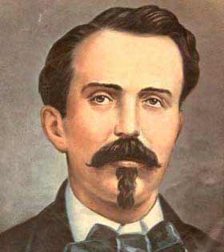

Cuba e suas contradições
A revolução cubana de 1959 tem profundas raízes na história nacional, o passado colonial demonstra uma longa trajetória de intervenções e interesses imperiais sobre a ilha. Cuba foi a última colônia da América Latina a se libertar da Espanha em 1859 e, por sua vez, teve duas guerras de independência. A primeira foi em 10 de outubro de 1868 e terminou em 1878, depois da derrota dos setores mais radicais comandados pelo general Antônio Maceo, que lutava pela libertação da Espanha e abolição da escravidão. A emancipação dos escravos não estava presente nas operações dos setores mais moderados do movimento, que expressava a qualidade de uma sociedade cubana “atravessada de tensões”. O fim da escravidão em Cuba se dá no ano de 1880, como parte de um processo no qual estão envolvidas pressões políticas externas, oriundas da Resistência da Inglaterra ao tráfico de escravos.
A revolução cubana de 1959 tem profundas raízes na história nacional, o passado colonial demonstra uma longa trajetória de intervenções e interesses imperiais sobre a ilha. Cuba foi a última colônia da América Latina a se libertar da Espanha em 1859 e, por sua vez, teve duas guerras de independência. A primeira foi em 10 de outubro de 1868 e terminou em 1878, depois da derrota dos setores mais radicais comandados pelo general Antônio Maceo, que lutava pela libertação da Espanha e abolição da escravidão. A emancipação dos escravos não estava presente nas operações dos setores mais moderados do movimento, que expressava a qualidade de uma sociedade cubana “atravessada de tensões”. O fim da escravidão em Cuba se dá no ano de 1880, como parte de um processo no qual estão envolvidas pressões políticas externas, oriundas da Resistência da Inglaterra ao tráfico de escravos.